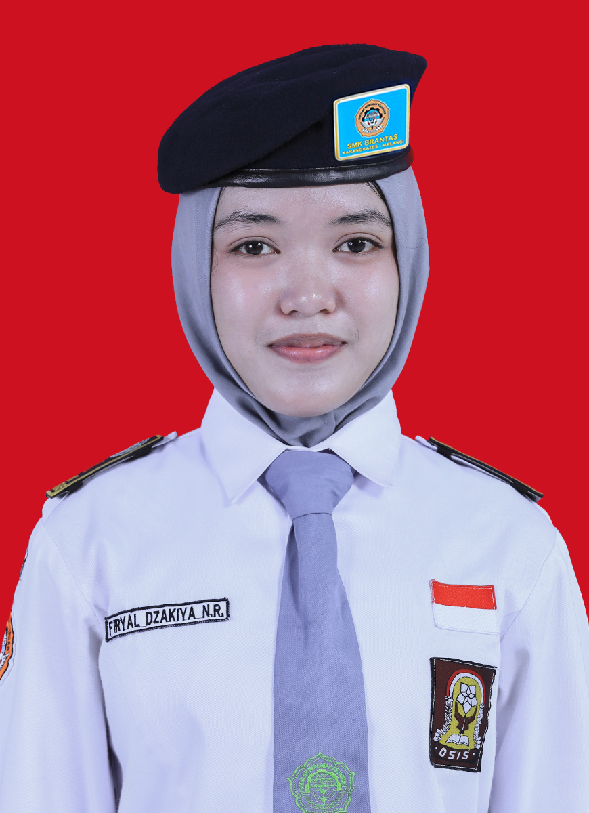
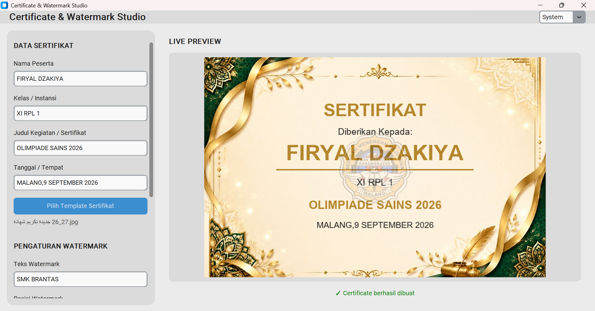
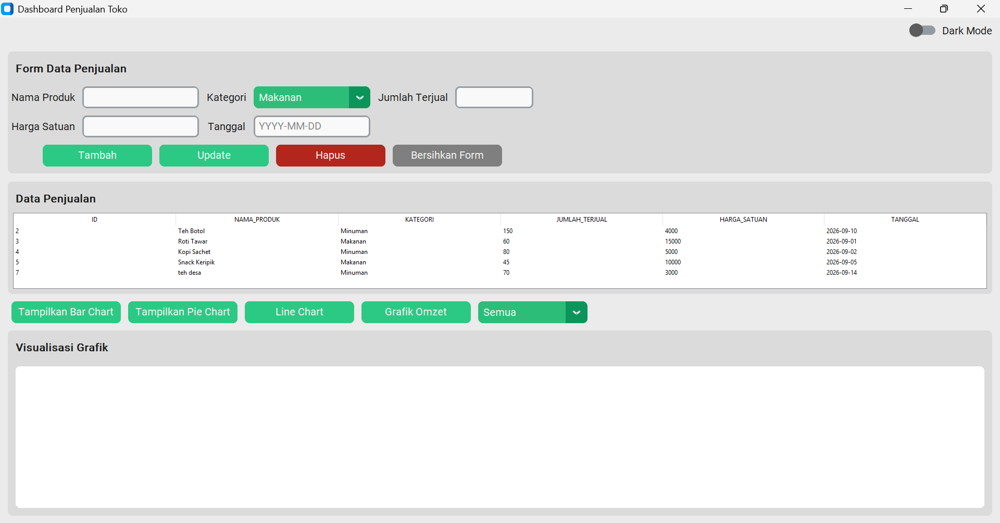
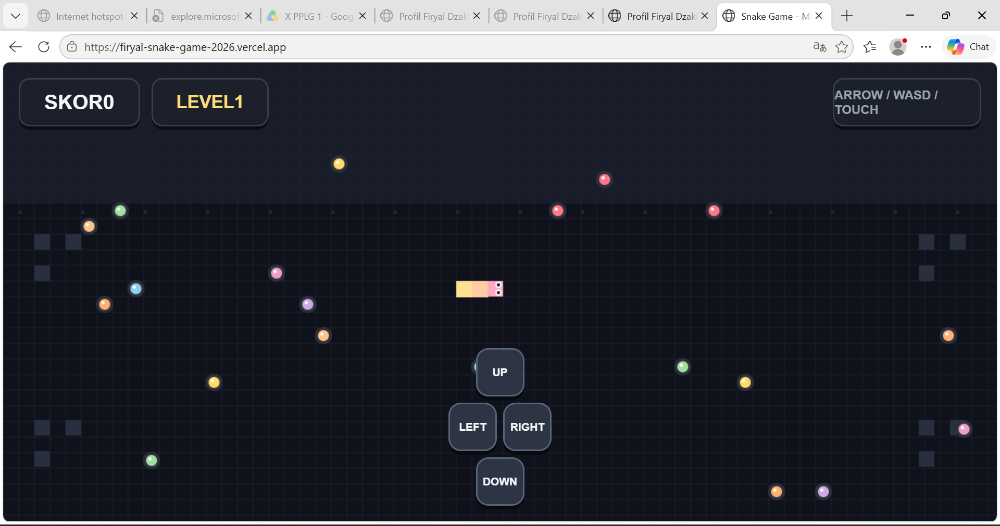

HTML
Membuat struktur dan tampilan website yang sederhana dan menarik.

Nama: Firyal Dzakiya
Sekolah: SMK Brantas Karangkates
Jurusan: Rekayasa Perangkat Lunak (RPL)
Kelas: XI RPL 1
Hobi: Membaca
Cita-cita: Menjadi psikolog
Saya adalah siswi SMK Brantas Karangkates jurusan Rekayasa Perangkat Lunak (RPL). Saya memiliki minat pada bidang teknologi, desain, dan organisasi. Saya senang mempelajari hal baru serta mengembangkan kemampuan diri melalui berbagai kegiatan dan proyek sekolah.
Saya percaya bahwa kerja keras, kreativitas, dan kerja sama yang baik dapat membantu saya mencapai tujuan serta memberikan manfaat bagi lingkungan sekitar.
Membuat struktur dan tampilan website yang sederhana dan menarik.
Mendesain tampilan web yang menarik dan responsif.
Membuat program desktop dan proyek sederhana menggunakan Python.


